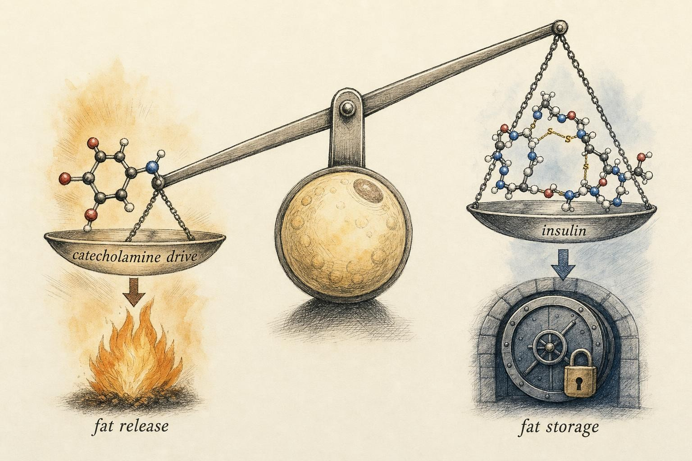
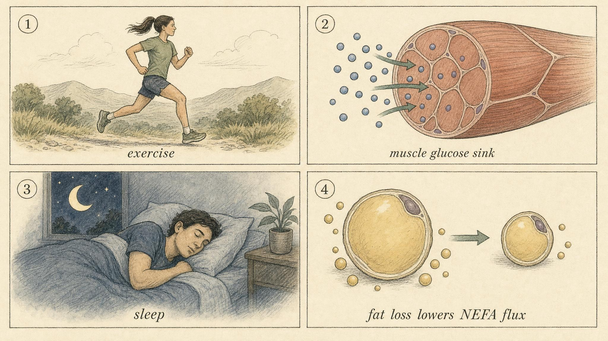

The Insulin Lever: Partitioning, Sensitivity, and What It Can and Cannot Do
Insulin is a storage signal and a brake on fat release, not a villain and not a magic switch. Here is what it actually does.
No hormone in the fat loss conversation carries more baggage than insulin. It gets blamed for stubborn midsection fat, credited for the results of low carbohydrate diets, and treated as a lever so powerful that pulling it supposedly overrides the laws of energy balance. Somewhere along the way, a precise storage and partitioning signal became a cartoon supervillain, and an entire industry of testing kits, carbohydrate timing charts, and insulin blocking supplements grew up around that myth.
Marisol is a good stand-in for how the myth actually lands on a real person. She is forty four, has spent the last two decades in a desk job, and restarted strength training eight months ago after a routine checkup flagged a rising fasting glucose number. A friend sent her a video explaining that carbohydrate spikes insulin, that insulin traps fat, and that the fix was a near zero carbohydrate diet paired with long fasting windows to keep insulin permanently low. She followed the plan for six weeks, lost very little weight, felt depleted in nearly every training session, and could not understand why crushing the hormone everyone blamed for her stall had not moved the needle at all. Marisol is not a case to be solved in this chapter. She is a thread we will follow, because her confusion is exactly the confusion this chapter exists to correct.
The industry built around that confusion is large and getting larger. Continuous glucose monitors, once a medical tool reserved for people managing diabetes, are now marketed to healthy adults as a window into a supposedly hidden enemy. Every small rise on the graph after a meal gets treated as evidence of harm, regardless of whether that rise falls, resolves normally, and leaves no trace an hour later. Supplement companies sell capsules promising to blunt an insulin response that, for most healthy people eating reasonable meals, was never dangerous to begin with. None of this means insulin is unimportant or that no one should ever pay attention to how their body handles carbohydrate. It means the conversation has drifted a long way from the actual physiology, and this chapter is the corrective.
Your job here is to strip the folklore and keep the physiology. Insulin is real, it is important, and its sensitivity is a genuine fat loss lever for the right person. But it is a lever with a defined length, a defined direction, and a defined population fit. By the end of this chapter you will be able to say exactly what insulin does, which levers honestly improve sensitivity, and for whom that improvement is worth chasing, which is precisely the judgment call Marisol's borrowed plan skipped entirely.
Start with the decision, not the biochemistry
Because this material is meant to be applied, let us front load the conclusions and then earn them across the rest of the chapter. Read the four claims below once now, skeptically if you like, and check each one again as the evidence for it arrives.
Everything below builds toward using those four claims with confidence, including the ability to explain, clearly and without jargon, why the fifth claim someone heard on a podcast last week does not hold up. Keep Marisol's plan in the back of your mind as you read. Every one of the four claims above touches something in her story, and by the worked example near the end of the chapter you will see exactly where her plan went wrong and what would have served her better.
What insulin actually is: a partitioning signal
Refresh the basics before building further. Insulin is a peptide hormone released by the beta cells of the pancreas, chiefly in response to rising blood glucose and, to a lesser degree, to certain amino acids arriving after a protein containing meal. Its evolutionary message is simple and ancient: fuel has arrived, store it, and stop mobilizing reserves.
Notice the two halves of that message. Insulin promotes uptake and storage of incoming nutrients, and it suppresses the release of fuel that is already stored. Both halves matter, but for fat loss the second half is the star. This is the concept of partitioning: insulin does not primarily decide how much energy is available across a day, it helps decide where that energy goes and whether stored energy stays put once it has been placed somewhere.
The three storage actions, briefly
When insulin binds its receptor on a target cell, a signaling cascade drives several coordinated effects. According to Santoro, McGraw, and Kahn (2021), these effects extend well beyond a single tissue and touch how the whole body handles nutrients.
Glucose uptake. In muscle and fat, insulin triggers movement of the glucose transporter type 4 (GLUT4) to the cell surface, opening the door for glucose to move from blood into the cell. Skeletal muscle is the dominant destination here, accounting for up to eighty percent of whole body glucose disposal under insulin stimulated conditions, according to Paquin, Lagacé, Brochu, and Dionne (2021).
Directing that glucose. Insulin does not send glucose to the same fate in every tissue. In muscle it favors glycogen storage, packing glucose away as a dense, quickly accessible fuel reserve. In the fat cell it can, in principle, feed new fat synthesis directly from carbohydrate, though in humans eating a typical mixed diet this particular pathway is quantitatively modest. The point worth keeping is that insulin behaves like a traffic controller, routing the same molecule to different fates depending on which tissue is listening (Santoro et al., 2021).
Trapping dietary fat. Insulin promotes esterification and triglyceride synthesis in adipose tissue and enhances the postprandial trapping of dietary fatty acids, keeping them out of general circulation for a period of time after a meal that contains fat (Carpentier, 2021).
It helps to hold the whole system in a single frame rather than treating these three actions as separate events. A typical day moves back and forth between a fed, insulin-dominant state and a fasted, catecholamine-dominant state many times over. Immediately after a meal, insulin rises, glucose gets pulled into muscle and liver, glycogen stores refill, and lipolysis is suppressed. As the hours pass and the meal is digested and cleared, insulin falls back toward a low baseline, the suppression on lipolysis lifts, and stored fuel becomes available again. Neither state is good or bad in isolation. Both are supposed to happen, repeatedly, every single day, in every metabolically healthy person. The question worth asking is never whether insulin rose after a meal. Of course it did, that is the correct and expected response. The useful question is whether the whole system moves fluidly between fed and fasted states, or whether it gets stuck.
The one action that matters most for fat loss
Here is the sentence worth memorizing above the rest of this section. Insulin is the most potent physiological suppressor of fat release the body possesses. It acts primarily by inhibiting intracellular triglyceride lipolysis inside the fat cell, which lowers the flow of nonesterified fatty acids (NEFA, also called free fatty acids) into the bloodstream (Carpentier, 2021).
That is the direct bridge back to Chapter 2. Recall the lipolytic machinery covered there: catecholamines (adrenaline and noradrenaline) bind beta-adrenergic receptors, raise cyclic adenosine monophosphate (cyclic AMP), activate protein kinase A, and switch on the lipase enzymes that liberate fatty acids from stored triglyceride. Insulin runs that same pathway in reverse. It lowers cyclic AMP and restrains protein kinase A, releasing the accelerator and pressing the brake at the same time (Santoro et al., 2021). The daily balance between storing and mobilizing fat is, to a large degree, a tug of war between catecholamine drive and insulin, and Marisol's near zero carbohydrate plan was really an attempt to weaken one side of that tug of war without touching the total amount of rope being pulled across the whole day.

Fig. 1 Storage versus release: insulin and catecholamines pull the same lever in opposite directions." data-image-idx="0" style="display:block;max-width:100%;max-height:75vh;height:auto;width:auto;margin:0 auto;cursor:pointer;">Insulin sensitivity: the lever worth understanding
Now separate two ideas that beginners routinely blur together. Insulin levels describe how much hormone is circulating in the blood at a given moment. Insulin sensitivity describes how effectively tissues respond to a given amount of that hormone. A sensitive person achieves the desired effect with a small signal. A resistant person needs a louder signal to get the same result, and often does not fully get it even then.
Sensitivity is the more useful concept for anyone applying this material, because it is a property of the tissue rather than a single number on a lab report, it responds to the honest levers discussed later in this chapter, and it explains why two people eating an identical carbohydrate load can walk away from that meal with very different experiences.
Why sensitivity is a real fat loss lever
Sensitivity earns its place on the lever list for three practical reasons, and notice that none of them require breaking energy balance to work.
Fuel partitioning. A more insulin sensitive person disposes of glucose efficiently into muscle glycogen and clears a meal without a prolonged, exaggerated insulin response. Because the insulin excursion is smaller and shorter, the lipolytic brake described above is applied more briefly across the day. Over many meals and many days, that shifts the storage versus mobilization balance in a favorable direction at the margins, even though no single meal decides the outcome.
Appetite stability. This is where the lever connects to adherence, the subject of Chapter 7. Better glycemic control tends to mean fewer sharp swings in blood sugar and a steadier hunger signal across the day. Stable fuel availability is easier to sustain a deficit on than a rollercoaster of highs and crashes. Appetite, not metabolism, is where most fat loss attempts actually fail, and we will return to that claim in much greater detail later in the course.
Graceful carbohydrate handling. A highly insulin sensitive athlete can eat a large carbohydrate load, partition it efficiently into performance and recovery, and move on with the day without much disruption. A less sensitive person handling the identical load spends more time with elevated glucose and insulin and traps more of that energy for longer. Sensitivity buys metabolic flexibility, the capacity to handle a wide range of fuel loads without a prolonged disturbance to the system.
It is worth naming how sensitivity actually gets measured, because the terminology shows up often enough to be worth spelling out once. Researchers sometimes use the homeostatic model assessment of insulin resistance (HOMA-IR), a calculation derived from a single fasting blood draw of glucose and insulin, as a rough surrogate for whole-body sensitivity. More rigorous research settings use a hyperinsulinemic-euglycemic clamp, a labor-intensive procedure that holds blood glucose steady with an intravenous glucose infusion while insulin is held at a fixed elevated level, allowing researchers to measure exactly how much glucose the body disposes of at that fixed hormone level. None of this is something an individual needs to run on themselves to apply the lessons in this chapter. It is simply useful to know that when a study reports "improved insulin sensitivity," there is usually a specific, well-defined measurement behind that claim rather than a vague impression.
What insulin resistance actually is, at the tissue level
To fix something, it helps to understand exactly how it breaks. The landmark integrative account from Samuel and Shulman (2016) frames insulin resistance not as a mysterious hormonal defect but as a consequence of substrate overflow. When energy intake chronically exceeds what tissues can store or burn, lipid accumulates in places it does not belong: inside liver cells and inside skeletal muscle fibers. This ectopic lipid, meaning fat stored somewhere other than adipose tissue, interferes directly with the insulin signaling cascade inside the cell.
The sequence matters for the mental model here. Muscle insulin resistance tends to appear first. When muscle stops taking up glucose efficiently, that glucose gets diverted toward the liver instead, promoting new fat synthesis and elevated blood lipids. Meanwhile, inflammation driven lipolysis in fat tissue floods the system with fatty acids that further drive glucose production out of the liver, according to Samuel and Shulman (2016). The whole picture is a spillover problem, not a carbohydrate toxicity problem, and that distinction changes what the actual fix looks like.
Carpentier (2021) adds a clean, usable definition to this picture: adipose tissue insulin resistance is best characterized by excess NEFA flux, meaning fat tissue that will not stay quiet even when insulin is telling it to. The fat cell keeps leaking fatty acids into circulation even when the storage signal is high. That leakage sits at the center of the whole downstream problem, and, as the honest levers section will show, it is also one of the more reversible parts of this picture.
One more piece of this mechanism is worth naming because it explains why insulin resistance tends to snowball rather than stay contained. Samuel and Shulman (2016) describe how immune cells called macrophages infiltrate white adipose tissue as fat accumulates beyond what that tissue can comfortably store. These infiltrating macrophages drive further lipolysis in the fat cell, which increases fatty acid delivery to the liver, which in turn stimulates the liver to produce more glucose even when glucose is already plentiful in the blood. The pattern that emerges is not one villain acting alone. It is a feedback loop, ectopic lipid impairing signaling, impaired signaling permitting more lipolysis, and more lipolysis worsening the ectopic lipid problem elsewhere in the body. Naming the loop matters because it shows why a single narrow fix rarely resolves the whole picture, and why the levers discussed next work by addressing the loop at more than one point simultaneously.
Play with that beam before reading on, because it encodes an idea people miss constantly. A single large meal tips a person hard toward storage for a couple of hours. A hard training session and good sleep tip the whole day back toward mobilization. What determines fat loss is not any single moment on the beam, it is the integrated position across twenty four hours, and across the day the biggest single input is still whether more energy was eaten than spent. The beam changes when and where fat is stored or released during a given window. It does not change whether the ledger can be violated, which is exactly the piece of physiology that a plan built around minimizing insulin at all costs tends to quietly assume away.
The honest levers that improve sensitivity
Here is the actionable core of the chapter. Four levers genuinely improve insulin sensitivity, and the evidence behind each one is strong. Notice that none of them is a supplement, a fasting window, or a carbohydrate ban, which is precisely the set of tools Marisol had been handed by the video that started her six week detour.
Lever one: exercise
Exercise improves insulin sensitivity through both acute and chronic mechanisms. Acutely, a single bout of muscle contraction recruits glucose transporter type 4 (GLUT4) to the cell surface through a pathway that does not require insulin at all, meaning a trained muscle can pull in glucose after exercise even with a modest insulin signal present. Chronically, repeated training raises the muscle's underlying capacity to store and use glucose over time.
According to Collins, Ross, Slentz, Huffman, and Kraus (2022), whose narrative review summarizes the Studies of a Targeted Risk Reduction Intervention through Defined Exercise (STRRIDE) randomized trials alongside related work, exercise reliably improves insulin sensitivity and glucose homeostasis, but the optimal amount, intensity, and mode of exercise are context dependent rather than one size fits all. Crucially, adding caloric restriction affects sensitivity differently than exercise alone does, which tells us that exercise and weight loss operate through partially independent pathways toward the same outcome. Nobody has to choose between them, and combining them is not redundant.
A practical detail worth pulling out of that review: both aerobic and resistance style exercise show benefit, and higher amounts of exercise generally outperform lower amounts within the ranges these trials tested, though the returns are not perfectly linear and intensity trades off against duration in ways that are still being worked out. The honest summary for someone applying this outside a research setting is straightforward. Regular movement of almost any structured kind improves the muscle's capacity to clear glucose, the effect shows up within days of starting, and it does not require a narrow, precisely calibrated protocol to obtain a meaningful benefit.
Lever two: muscle mass
Skeletal muscle is the body's largest glucose sink, disposing of up to eighty percent of an insulin stimulated glucose load, according to Paquin, Lagacé, Brochu, and Dionne (2021). More trained muscle means more real estate for glucose to be routed toward, which is why resistance training earns a place on this list independent of its cardiovascular style effects, and it is a large part of why Marisol's return to strength training eight months earlier had already been quietly working in her favor before the carbohydrate ban ever entered the picture.
Grade this lever honestly, because the literature does. Paquin and colleagues (2021) find that resistance training reliably improves surrogate markers of insulin sensitivity across a wide range of populations, yet the quantitative gain in muscle mass and the improvement in glucose handling are often concurrent without being strictly causal. In plain terms, lifting improves insulin sensitivity, but not purely because the muscle got bigger. Much of the benefit comes from the training stimulus itself and from improved muscle quality, not from size alone.
Lever three: sleep
This is the lever most often underweighted by people otherwise doing everything else correctly. Spiegel, Knutson, Leproult, Tasali, and Van Cauter (2005) documented that recurrent partial sleep restriction in healthy young adults produces marked decreases in glucose tolerance and insulin sensitivity within a matter of days. Short sleep can make an otherwise healthy person look temporarily insulin resistant.
The same work connects directly to Chapter 7. Sleep curtailment lowered leptin, the hormone that signals satiety, and raised ghrelin, the hormone that signals hunger, and those hormonal shifts tracked closely with increased hunger and appetite (Spiegel et al., 2005). Poor sleep hits twice: it degrades how tissues handle glucose, and it simultaneously turns up the hunger signal that makes holding a deficit harder. When every other part of a plan looks reasonable and progress has still stalled, sleep is one of the first places worth looking.
This lever deserves a plain, practical takeaway rather than a vague call to "sleep more." The restriction studied by Spiegel and colleagues (2005) involved cutting healthy young adults down to roughly four hours a night for six consecutive nights, a level of curtailment sharper than most people experience routinely, and the metabolic changes still showed up within days. That does not mean only extreme sleep loss matters. It means the system is sensitive to sleep debt faster than most people expect, and a stretch of consistently short nights, the kind that accumulates quietly during a stressful work period or a demanding season of caregiving, is doing real, measurable work against glucose handling and appetite control even when it never reaches the four-hour extreme tested in the laboratory.
Lever four: fat loss itself
This is the lever that dissolves half the mythology on its own, so slow down here. Losing body fat is itself one of the most reliable ways to improve insulin sensitivity, and the mechanism behind that improvement is precise and worth knowing in detail rather than taking on faith.
Schenk, Harber, Shrivastava, Burant, and Horowitz (2009) studied obese women who lost roughly twelve percent of body weight, either through diet alone or through diet combined with exercise. Both groups improved insulin sensitivity by about sixty percent. Then the investigators did something clever. They artificially restored each subject's pre-weight-loss level of fatty acid mobilization by infusing lipid overnight. Doing so almost completely reversed the improvement in insulin sensitivity, even in the exercise group whose oxidative capacity had increased substantially over the course of the study.
Read that result carefully, because it overturns a popular assumption. The improvement in insulin sensitivity was driven by reduced fatty acid mobilization, not by an enhanced capacity to burn fat. Quieter fat tissue, releasing fewer fatty acids into circulation, was the actual mediator of the benefit. Having a greater capacity to oxidize fat did not rescue sensitivity once the fatty acid flood was reintroduced artificially (Schenk et al., 2009). This finding maps precisely onto Carpentier's definition of adipose tissue insulin resistance as excess NEFA flux. Lose fat, and the fat tissue leaks less. Sensitivity recovers as a downstream consequence, not as a separate project requiring its own protocol.

Fig. 2 The four honest levers. None of them is a carbohydrate ban." data-image-idx="1" style="display:block;max-width:100%;max-height:75vh;height:auto;width:auto;margin:0 auto;cursor:pointer;">The ranker encodes the single most important judgment call in this chapter: population fit. For a higher body fat, less sensitive profile, fat loss and sleep are enormous levers because there is genuine dysfunction to correct. For a lean, already insulin sensitive athlete, there is almost nothing to fix. Their tissues already respond crisply to a small signal, so a sensitivity focused strategy has very little headroom to work with. Recommending that a lean, sensitive athlete chase further insulin sensitivity is a bit like recommending stronger glasses to someone who already sees perfectly well.
Correcting the myth: insulin does not cause fat by itself
Now the confrontation this chapter exists for. The carbohydrate-insulin model of obesity (CIM) proposes that dietary carbohydrate raises insulin, that elevated insulin partitions energy into fat storage, and that this partitioning is the primary cause of obesity. In its strong form, if insulin is controlled, fat is controlled, and energy balance becomes downstream or even irrelevant. It is an elegant story, and it is also, in its strong form, wrong.
According to Hall (2017), whose critical appraisal walks through the model's testable predictions and checks them against controlled inpatient feeding studies, the gold standard setting where intake is measured directly rather than reported by participants, the verdict is blunt: important predictions of the carbohydrate-insulin model have been experimentally falsified. When carbohydrate and fat are swapped while total calories and protein are held constant, the dramatic fat loss advantage the model predicts for low carbohydrate diets does not materialize. The model is too simplistic, and insulin control alone does not drive fat loss independent of energy balance (Hall, 2017).
The design of those inpatient feeding studies is worth understanding, because it is exactly the kind of controlled setting that separates a testable claim from a plausible-sounding story. Participants live inside a metabolic ward for weeks at a time, every gram of food they eat is weighed and prepared by the research team, and energy expenditure is tracked with a precision that no self-reported diet study can match. Under those tightly controlled conditions, when researchers held total calories and protein fixed and swapped the ratio of carbohydrate to fat, the strong version of the carbohydrate-insulin model predicted that the lower-carbohydrate, lower-insulin condition should produce meaningfully more body fat loss. It did not. The two conditions produced very similar results. That is precisely the kind of finding a model is supposed to survive if it is correct, and this one did not survive it (Hall, 2017).
Be precise about what is and is not being claimed here, because a sloppy myth correction just creates a new myth in its place.
How do we reconcile "insulin brakes fat release all day" with "insulin does not cause obesity"? The resolution is the integrated view the balance beam taught earlier in the chapter. Yes, insulin suppresses lipolysis after a meal. But in the hours between meals, and overnight, insulin falls and mobilization resumes on its own. Across a full day spent in energy deficit, the periods of mobilization outweigh the periods of storage, regardless of the exact carbohydrate mix that was eaten. The brake is real, but it is released many times over the course of a day, and the net position across the full twenty four hours is set by energy balance, not by the transient insulin peaks that follow each individual meal.
There is also a direction of causation trap worth naming explicitly, because it is one of the most persuasive parts of the myth. People observe insulin resistance present alongside obesity and conclude that insulin caused the obesity. Samuel and Shulman (2016) tell the opposite story: chronic energy surplus and ectopic lipid accumulation caused the insulin resistance in the first place. The arrow points from surplus to resistance, not from insulin to fat. That is exactly why fat loss, according to Schenk and colleagues (2009), reverses the resistance rather than merely masking it. Fix the surplus, quiet the fat tissue, and insulin sensitivity follows as a natural consequence.
Worked example: two profiles, one lever, very different verdicts
Abstract principles earn their keep when they change a real decision. Apply the population fit logic built across this chapter to two different profiles.
Profile one: the lean competitor
Picture a physique athlete at roughly eight percent body fat, training six days a week, sleeping eight hours a night, deep into contest preparation, who is wondering whether to adopt an aggressive low carbohydrate, insulin minimizing approach to break through a stall.
The read here: this is a poor lever for this profile. This athlete is already highly insulin sensitive, with quiet fat tissue and excellent glucose handling to begin with. There is no meaningful sensitivity dysfunction left to correct, so a sensitivity focused strategy offers almost no headroom, exactly the scenario the ranker widget shows for a lean profile. Worse, slashing carbohydrate this deep into contest preparation can degrade training quality, which is the actual fat loss engine for a trainee at this level. A stall in this scenario is far more likely to trace back to total energy flux, adherence, or recovery than to insulin specifically. The lever exists in principle, but it is the wrong tool for this particular profile.
Profile two: Marisol
Return to Marisol: forty four years old, roughly thirty percent body fat, sedentary for most of the previous two decades before restarting strength training eight months ago, sleeping five to six broken hours most nights, with a recently flagged rise in fasting glucose. Same question as above: is insulin sensitivity worth targeting for her specifically?
The read here: emphatically yes, but not in the way the borrowed plan suggested. She does not need a carbohydrate ban or a fasting protocol built for a leaner, more sensitive population that started from a completely different baseline. She needs the four honest levers, which happen to be nearly identical to what a sensible general program already prescribes. Fat loss will quiet her NEFA flux and help restore sensitivity over time (Schenk et al., 2009). Fixing her sleep will improve both glucose handling and hunger regulation simultaneously (Spiegel et al., 2005). Continuing the resistance training she already restarted, and layering in some additional exercise volume, expands her glucose sink and adds a second, partly independent improvement pathway (Collins et al., 2022; Paquin et al., 2021). The remarkable part of her situation is that improving her insulin sensitivity and executing a sensible fat loss program turn out to be the same set of actions. The lever is genuinely useful for her, and it gets pulled by doing the ordinary basics well, not by any dramatic manipulation of insulin itself.
Picture what a realistic next few months look like for her, in concrete terms rather than abstractions. She keeps her three weekly resistance sessions and adds two short walks most days, neither of which requires new equipment or a special program. She works with her physician on the fasting glucose finding directly, rather than treating a video as a substitute for that conversation. She protects a consistent bedtime on work nights, even if it means the routine feels less flexible for a while, because the sleep lever is acting on both her glucose handling and her appetite at the same time. She eats to a moderate, sustainable deficit built around foods she can actually keep eating for months, carbohydrate included, because carbohydrate was never the enemy her borrowed plan made it out to be. None of this is dramatic. All of it is the lever working exactly as the evidence in this chapter predicts it should.
That is the whole lesson of this chapter compressed into two profiles. The insulin lever matters most for the person carrying the most dysfunction to reverse, and even then it is pulled by fat loss, sleep, movement, and muscle rather than by any special intervention aimed directly at insulin.
Reduced fatty acid mobilization, not enhanced fat oxidation, is the primary mediator of the improved insulin sensitivity that follows weight loss.
Paraphrasing the central finding of Schenk et al. (2009)
A boundary note before Chapter 8
This chapter is the physiological groundwork for the pharmacological partitioning agents introduced, strictly for educational purposes, in Chapter 8. Some of those agents act on exactly the machinery discussed here: nutrient partitioning, insulin signaling, and fatty acid flux. Understanding insulin's real role, and its real limits, is what allows anyone to evaluate those tools with clear eyes rather than with credulous enthusiasm.
Hold two lines firmly. First, the same population fit logic applies everywhere in this course: a tool built to correct a specific dysfunction is only useful to someone who actually has that dysfunction. Second, and non negotiable, anything involving symptoms, metabolic dysfunction, or medication decisions sits outside what this course, or any educational material like it, is equipped to handle. If a person shows signs that warrant medical evaluation, such as unusual fatigue, excessive thirst, unexplained weight change, or a concerning lab result, that is a signal for professional assessment, not something to interpret or manage informally from the sidelines. Marisol's rising fasting glucose is exactly that kind of signal. The honest response to it is not a carbohydrate ban improvised from a video. It is a conversation with her physician, run alongside the ordinary levers this chapter has described.
Think of this chapter, and the four honest levers at its center, as the floor beneath any more advanced discussion of partitioning. Everything more sophisticated that follows in this course sits on top of that floor rather than replacing it. Someone who has not addressed sleep, movement, muscle, and body fat has not exhausted the honest options yet, no matter how sophisticated the next tool on offer sounds. That ordering, basics first, advanced tools only once the basics are genuinely in place and only for the population they were built for, will repeat throughout the rest of this course, and it is worth internalizing here while the stakes are still low.
Key Takeaways
- Insulin is a storage and partitioning signal. Its most important fat loss action is suppressing lipolysis, making it the direct counterweight to the catecholamine drive from Chapter 2.
- Insulin sensitivity, how effectively tissues respond to a given signal, is a legitimate lever because it shapes fuel partitioning, appetite stability, and carbohydrate handling.
- Insulin resistance is largely a spillover problem: chronic energy surplus and ectopic lipid in muscle and liver impair signaling. The causal arrow runs from surplus to resistance, not from insulin to fat.
- The four honest levers are exercise, trained muscle mass, sleep, and fat loss itself. Grade muscle honestly: its benefit runs alongside training, not strictly from size alone.
- Fat loss improves sensitivity chiefly by lowering fatty acid mobilization from adipose tissue, not by enhancing the capacity to burn fat (Schenk et al., 2009).
- The strong carbohydrate-insulin model has been experimentally falsified. Controlling insulin does not drive fat loss independent of energy balance (Hall, 2017).
- Population fit is decisive: this lever matters most for a higher body fat, less sensitive profile and offers almost nothing to a lean, already sensitive athlete.
We keep gesturing at appetite, because it is where diets actually succeed or fail. Chapter 7 takes it head on. We build on the hunger stabilizing effects of steady blood sugar met here, unpack the leptin and ghrelin signals that sleep loss disrupts, and turn adherence from a matter of willpower into a matter of physiology that can be engineered.
References
Carpentier, A. C. (2021). 100th anniversary of the discovery of insulin perspective: Insulin and adipose tissue fatty acid metabolism. American Journal of Physiology-Endocrinology and Metabolism, 320(4), E653-E670. https://doi.org/10.1152/ajpendo.00620.2020
Collins, K. A., Ross, L. M., Slentz, C. A., Huffman, K. M., & Kraus, W. E. (2022). Differential effects of amount, intensity, and mode of exercise training on insulin sensitivity and glucose homeostasis: A narrative review. Sports Medicine-Open, 8(1), Article 90. https://doi.org/10.1186/s40798-022-00480-5
Hall, K. D. (2017). A review of the carbohydrate-insulin model of obesity. European Journal of Clinical Nutrition, 71(3), 323-326. https://doi.org/10.1038/ejcn.2016.260
Paquin, J., Lagacé, J.-C., Brochu, M., & Dionne, I. J. (2021). Exercising for insulin sensitivity: Is there a mechanistic relationship with quantitative changes in skeletal muscle mass? Frontiers in Physiology, 12, Article 656909. https://doi.org/10.3389/fphys.2021.656909
Samuel, V. T., & Shulman, G. I. (2016). The pathogenesis of insulin resistance: Integrating signaling pathways and substrate flux. Journal of Clinical Investigation, 126(1), 12-22. https://doi.org/10.1172/JCI77812
Santoro, A., McGraw, T. E., & Kahn, B. B. (2021). Insulin action in adipocytes, adipose remodeling, and systemic effects. Cell Metabolism, 33(4), 748-757. https://doi.org/10.1016/j.cmet.2021.03.019
Schenk, S., Harber, M. P., Shrivastava, C. R., Burant, C. F., & Horowitz, J. F. (2009). Improved insulin sensitivity after weight loss and exercise training is mediated by a reduction in plasma fatty acid mobilization, not enhanced oxidative capacity. The Journal of Physiology, 587(20), 4949-4961. https://doi.org/10.1113/jphysiol.2009.175489
Spiegel, K., Knutson, K., Leproult, R., Tasali, E., & Van Cauter, E. (2005). Sleep loss: A novel risk factor for insulin resistance and Type 2 diabetes. Journal of Applied Physiology, 99(5), 2008-2019. https://doi.org/10.1152/japplphysiol.00660.2005